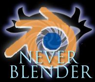
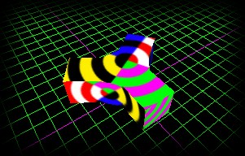
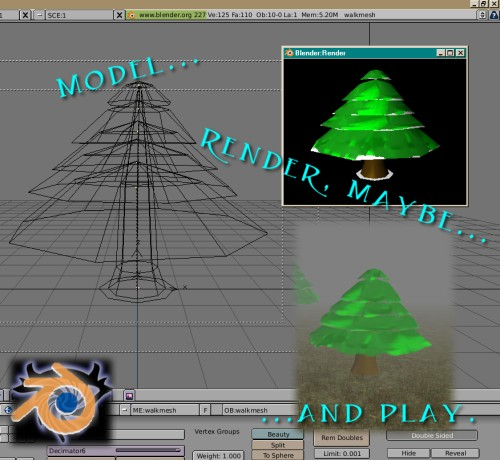

NeverBlender: A look back

NeverBlender was a project I started and, luckily, it was picked up by others. Things went a little bit south at my end.
NeverBlender is a Python script extension that allowed exporting Neverwinter Nights format Bioware MDL files from Blender - the version I made seemingly worked up to version 2.5x. At the time, it supported exporting basic model geometry and texture UV maps. It also allowed keeping MDL-specific settings in a text block in model file.
My original plan for fancy future directions would have been to support animation exporting and some of the other features supported by MDL file format.

At the time when the project started, the prefered 3D modeling program for making MDL files was Discreet’s Gmax (a cut-down freeware version of 3DS Max). I had two reasons for starting this project. First, I didn’t know how to use 3DS Max and I was already familiar with Blender; second, I thought the way Gmax supported animations was janky and limited. You had only one timeline which you had to manually split up among various animations, while Blender at the time already supported animation actions. (Of course, ultimately, this was all academic because I never actually got to implement animation exporting!)
Git-ified version of the original NeverBlender repository is available in Codeberg.

It was originally developed between 2003–2006. At this page, I’ll probably later on go on to describe the various misadventures with the development process and why I wasn’t quite able to continue the project.
But suffice to say, I’m happy that the torch was picked up! The development was subsequently continued by “Symmetric”:
I’ve not kept at touch with the current developers and I don’t know if there’s a public code repository for these.
I’m not at the moment involved with these subsequent projects, and at this point, they’ve evolved way, way, way past what I could ever do.